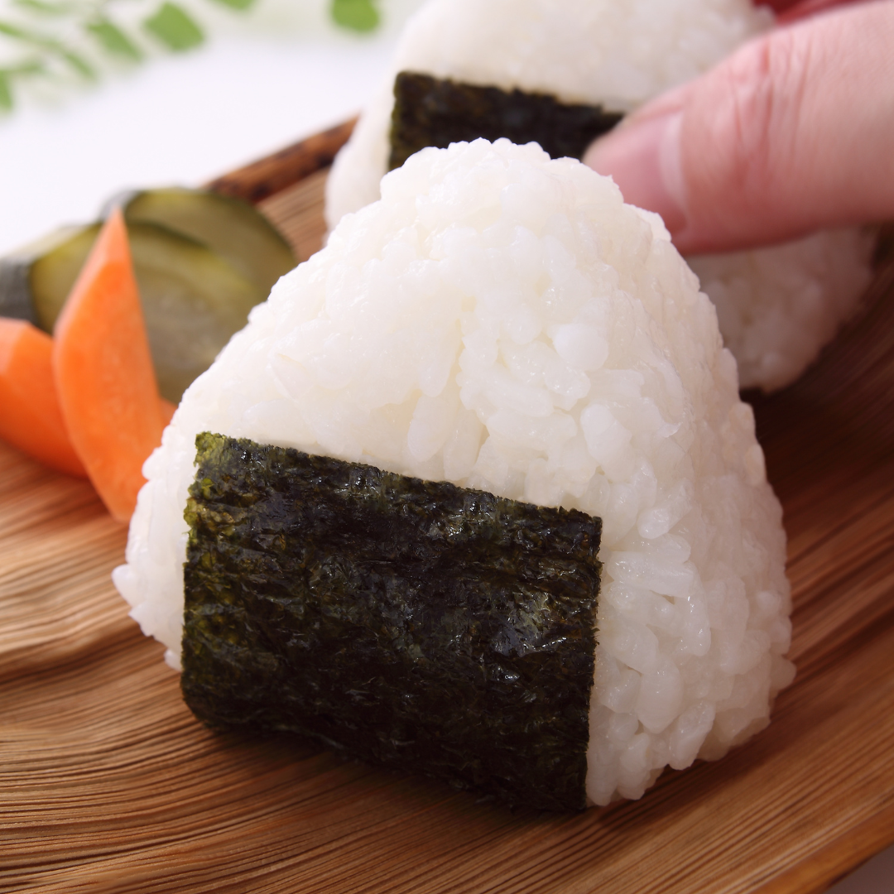

Onigiri

Japanese rice balls.
Onigiri are Japanese rice balls that come in many shapes and sizes. They can be filled or unfilled
The general idea is to have a portable, ready to eat bowl of rice.
Ingredients
- 1 and a half cups Japanese short grain rice
- 1 and two thirds cups of cold water
- Salt
- Unseasoned nori
Recipe directions
- Wash and cook the rice in a rice cooker.
- Cut the nori into thirds either with scissors or creasing and tearing the nori.
- Prepare a medium bowl of water and a small bowl of salt.
- When the rice is done, fluff it and transfer it to a bowl to cool. Keep the bowl covered with a damp towel to keep the rice from drying out.
- When the rice has cooled enough to handle, wet your hands in the bowl of water and dip your index finger into the bowl of salt.
- Rub the salt into both hands and then scoop a sixth of the rice into one hand.
- Curl your fingers up and over the rice, then use your index and middle fingers on your free hand to shape the rice into a triangle.
- Roll the rice ball on your hand onto another side and repeat until the triangle has equal sides.
- Place a strip of nori centered on the rice and then wrap each side of the nori around the triangle and under the base.